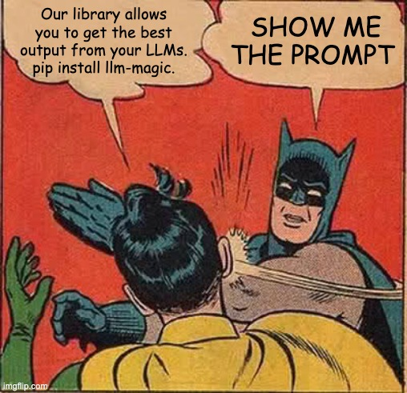
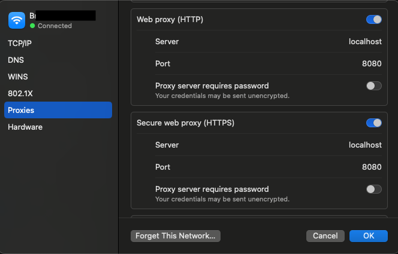
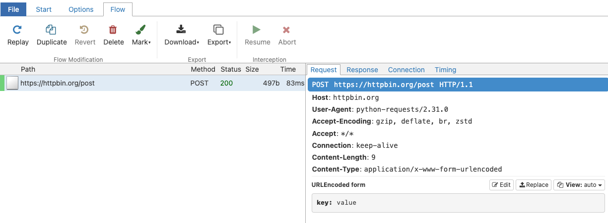

import os
# The location of my CA File
cert_file = '/Users/hamel/Downloads/mitmproxy-ca-cert.pem'
os.environ['REQUESTS_CA_BUNDLE'] = cert_file
os.environ['SSL_CERT_FILE'] = cert_file
os.environ['HTTPS_PROXY'] = 'http://127.0.0.1:8080'Fuck You, Show Me The Prompt.
llms
ml
Quickly understand inscrutable LLM frameworks by intercepting API calls.
Background
There are many libraries that aim to make the output of your LLMs better by re-writing or constructing the prompt for you. These libraries purport to make the output of your LLMs:
- safer (ex: guardrails)
- deterministic (ex: guidance)
- structured (ex: instructor)
- resilient (ex: langchain)
- … or even optimized for an arbitrary metric (ex: DSPy).
A common theme among some of these tools is they encourage users to disintermediate themselves from prompting.
DSPy: “This is a new paradigm in which LMs and their prompts fade into the background …. you can compile your program again DSPy will create new effective prompts”
guidance “guidance is a programming paradigm that offers superior control and efficiency compared to conventional prompting …”
Even when tools don’t discourage prompting, I’ve often found it difficult to retrieve the final prompt(s) these tools send to the language model. The prompts sent by these tools to the LLM is a natural language description of what these tools are doing, and is the fastest way to understand how they work. Furthermore, some tools have dense terminology to describe internal constructs which can further obfuscate what they are doing.
For reasons I’ll explain below, I think most people would benefit from the following mindset:

In this blog post, I’ll show you how you can intercept API calls w/prompts for any tool, without having to fumble through docs or read source code. I’ll show you how to setup and operate mitmproxy with examples from the LLM the tools I previously mentioned.
Motivation: Minimize accidental complexity
Before adopting an abstraction, its important to consider the dangers of taking on accidental complexity. This is acute for LLM abstractions relative to typical programming abstractions.
Programming abstraction -> a human-like language you can use to translate your task into machine code
— Hamel Husain (@HamelHusain) February 5, 2024
LLM abstraction -> an unintelligible framework you can use to translate your task into human language
While this is a cheeky comment, it’s worth keeping this in mind while evaluating tools. There are two primary types of automation that tools provide:
- Interleaving code and LLMs: Expressing this automation is often best done through code, since code must be run to carry out the task. Examples include routing, executing functions, retries, chaining, etc.
- Re-Writing and constructing prompts: Expressing your intent is often best done through natural language. However, there are exceptions! For example, it is convenient to express a function definition or schema from code instead of natural language.
Many frameworks offer both types of automation. However, going too far with the second type can have negative consequences. Seeing the prompt allows you decide:
- Is this framework really necessary?
- Should I just steal the final prompt (a string) and jettison the framework?
- Can we write a better prompt than this (shorter, aligned with your intent, etc)?
- Is this the best approach (do the # of API calls seem appropriate)?
In my experience, seeing the prompts and API calls are essential to making an informed decisions.
Intercepting LLM API calls
There are many possible ways to intercept LLM API calls, such as monkey patching source code or finding a user-facing option. I’ve found that those approaches take far too much time since the quality of source code and documentation can vary greatly. After all, I just want to see API calls without worrying about how the code works!
However, I’ve found this can be very time consuming. A framework agnostic way to see API calls is to setup a proxy that logs your outgoing API requests. This is easy to do with mitmproxy, an free, open-source HTTPS proxy.
Setting Up mitmproxy
This is an opinionated way to setup mitmproxythat’s beginner-friendly for our intended purposes:
Follow the installation instructions on the website
Start the interactive UI by running
mitmwebin the terminal. Pay attention to the url of the interactive UI in the logs which will look something like this:Web server listening at http://127.0.0.1:8081/Next, you need to configure your device (i.e. your laptop) to route all traffic through
mitproxy, which listens onhttp://localhost:8080. Per the documentation:We recommend to simply search the web on how to configure an HTTP proxy for your system. Some operating system have a global settings, some browser have their own, other applications use environment variables, etc.
In my case, A google search for “set proxy for macos” returned these results:
choose Apple menu > System Settings, click Network in the sidebar, click a network service on the right, click Details, then click Proxies.
I then insert
localhostand8080in the following places in the UI:
Next, navigate to http://mitm.it and it will give you instructions on how to install the mitmproxy Certificate Authority (CA), which you will need for intercepting HTTPS requests. (You can also do this manually here.) Also, take note of the location of the CA file as we will reference it later.
You can test that everything works by browsing to a website like https://mitmproxy.org/, and seeing the corresponding output in the mtimweb UI which for me is located at http://127.0.0.1:8081/ (look at the logs in your terminal to get the URL).
Now that you set everything up, you can disable the proxy that you previously enabled on your network. I do this on my mac by toggling the proxy buttons in the screenshot I showed above. This is because we want to scope the proxy to only the python program to eliminate unnecessary noise.
Tip
Networking related software commonly allows you to proxy outgoing requests by setting environment variables. This is the approach we will use to scope our proxy to specific Python programs. However, I encourage you to play with other types of programs to see what you find after you are comfortable!
Environment variables for Python
We need to set the following environment variables so that the requests and httpx libraries will direct traffic to the proxy and reference the CA file for HTTPS traffic:
Important
Make sure you set these environment variables before running any of the code snippets in this blog post.
You can do a minimal test by running the following code:
import requests
requests.post('https://httpbin.org/post',
data={'key': 'value'})<Response [200]>This will appear in the UI like so:

Examples
Now for the fun part, let’s run through some examples of LLM libraries and intercept their API calls!
Guardrails
Guardrails allows you specify structure and types, which it uses to validate and correct the outputs of large language models. This is a hello world example from the guardrails-ai/guardrails README:
from pydantic import BaseModel, Field
from guardrails import Guard
import openai
class Pet(BaseModel):
pet_type: str = Field(description="Species of pet")
name: str = Field(description="a unique pet name")
prompt = """
What kind of pet should I get and what should I name it?
${gr.complete_json_suffix_v2}
"""
guard = Guard.from_pydantic(output_class=Pet, prompt=prompt)
validated_output, *rest = guard(
llm_api=openai.completions.create,
engine="gpt-3.5-turbo-instruct"
)
print(f"{validated_output}"){
"pet_type": "dog",
"name": "BuddyWhat is happening here? How is this structured output and validation working? Looking at the mitmproxy UI, I can see that the above code resulted in two LLM API calls, the first one with these arguments:
{
"model": "gpt-3.5-turbo-instruct",
"prompt": "\n What kind of pet should I get and what should I name it?\n\n \nGiven below is XML that describes the information to extract from this document and the tags to extract it into.\n\n<output>\n <string name=\"pet_type\" description=\"Species of pet\"/>\n <string name=\"name\" description=\"a unique pet name\"/>\n</output>\n\n\nONLY return a valid JSON object (no other text is necessary), where the key of the field in JSON is the `name` attribute of the corresponding XML, and the value is of the type specified by the corresponding XML's tag. The JSON MUST conform to the XML format, including any types and format requests e.g. requests for lists, objects and specific types. Be correct and concise.\n\nHere are examples of simple (XML, JSON) pairs that show the expected behavior:\n- `<string name='foo' format='two-words lower-case' />` => `{'foo': 'example one'}`\n- `<list name='bar'><string format='upper-case' /></list>` => `{\"bar\": ['STRING ONE', 'STRING TWO', etc.]}`\n- `<object name='baz'><string name=\"foo\" format=\"capitalize two-words\" /><integer name=\"index\" format=\"1-indexed\" /></object>` => `{'baz': {'foo': 'Some String', 'index': 1}}`\n\n\n\nJson Output:\n\n",
"temperature": 0
}Followed by another call with these arguments:
{
"model": "gpt-3.5-turbo-instruct",
"prompt": "\nI was given the following response, which was not parseable as JSON.\n\n\"{\\n \\\"pet_type\\\": \\\"dog\\\",\\n \\\"name\\\": \\\"Buddy\"\n\nHelp me correct this by making it valid JSON.\n\nGiven below is XML that describes the information to extract from this document and the tags to extract it into.\n\n<output>\n <string name=\"pet_type\" description=\"Species of pet\"/>\n <string name=\"name\" description=\"a unique pet name\"/>\n</output>\n\n\nONLY return a valid JSON object (no other text is necessary), where the key of the field in JSON is the `name` attribute of the corresponding XML, and the value is of the type specified by the corresponding XML's tag. The JSON MUST conform to the XML format, including any types and format requests e.g. requests for lists, objects and specific types. Be correct and concise. If you are unsure anywhere, enter `null`.\n\n\nJson Output:\n\n",
"temperature": 0
}Woof. That’s a whole lot of ceremony to get structured output! We learned that this library’s approach to structured output uses XML schemas (while others use function calling). It’s worth considering if you can fashion a better or simpler approach now that you the magic has been lifted. Either way, we have immediate insight into how it works without dragging you into uncessary complexity, which is a win.
Note
I’m not going to critique any LLM frameworks in detail in this post. That is a decision you must make depending on your use-case. What’s important is that you know how they work before you inject them into your workflow.
Guidance
Guidance offers constrained generation and programming constructs for writing prompts. Let’s dive into a hello world example from guidance-ai/guidance README:
from guidance import models, user, system, assistant, gen
gpt = models.OpenAI("gpt-3.5-turbo")
with system(): lm = gpt + "You are a cat expert."
with user(): lm += "What are the smallest cats?"
with assistant(): lm += gen("answer", stop=".")systemYou are a cat expert.userWhat are the smallest cats?assistantThe smallest cat breed is the Singapura
This looks pretty neat! But what is it doing exactly? In particular I wonder if the stop parameter in gen is doing anything. This is the call from the mitmproxy UI:
{
"max_tokens": 1000,
"messages": [
{
"content": "You are a cat expert.",
"role": "system"
},
{
"content": "What are the smallest cats?",
"role": "user"
}
],
"model": "gpt-3.5-turbo",
"n": 1,
"stream": true,
"temperature": 0.0,
"top_p": 1.0
}Interestingly, this request sent by this library doesn’t forward the stop parameter when calling the API, even though it appears to be stopping generation in another way. In this situation, I’m being charged extra for tokens that are generated by the underlying LLM, even though guidance is truncating the output - which is not ideal.
Langchain
Langchain is a multi-tool for all things LLM. Lots of people rely on Langchain when get started with LLMs. Since Langchain has lots of surface area I’ll go through two examples.
LCEL Batching
First, let’s take a look at the this example from their new LCEL (langchain expression language) guide:
from langchain_openai import ChatOpenAI
from langchain_core.prompts import ChatPromptTemplate
from langchain_core.output_parsers import StrOutputParser
from langchain_core.runnables import RunnablePassthrough
prompt = ChatPromptTemplate.from_template(
"Tell me a short joke about {topic}"
)
output_parser = StrOutputParser()
model = ChatOpenAI(model="gpt-3.5-turbo")
chain = (
{"topic": RunnablePassthrough()}
| prompt
| model
| output_parser
)chain.batch(["ice cream", "spaghetti", "dumplings", "tofu", "pizza"])["Why did the ice cream go to therapy?\n\nBecause it had too many toppings and couldn't find its flavor!",
'Why did the tomato turn red?\n\nBecause it saw the spaghetti sauce!',
'Why did the dumpling go to the bakery?\n\nBecause it kneaded some company!',
'Why did the tofu go to the party?\n\nBecause it wanted to blend in with the crowd!',
'Why did the pizza go to the wedding?\n\nBecause it wanted to be a little cheesy!']That’s interesting! So how does this actually work? When looking at mitmproxy, I see five separate API calls:
{ "messages": [{"content": "Tell me a short joke about spaghetti", "role": "user"}],
"model": "gpt-3.5-turbo", "n": 1, "stream": false, "temperature": 0.7}{ "messages": [{"content": "Tell me a short joke about ice cream", "role": "user"}],
"model": "gpt-3.5-turbo", "n": 1, "stream": false, "temperature": 0.7}…and so on for each of the five items in the list.
Five separate calls to OpenAI may be sub-optimal as they are not truly batching requests as allowed by the OpenAI API. I’ve personally hit rate limits when using LCEL in this way - its only until I looked at the API calls that I understood what was happening! (It’s easy to be mislead by the word “batch”).
SmartLLMChain
Next I’ll focus on automation that writes prompts for you, particularly SmartLLMChain:
from langchain.prompts import PromptTemplate
from langchain_experimental.smart_llm import SmartLLMChain
from langchain_openai import ChatOpenAI
hard_question = "I have a 12 liter jug and a 6 liter jug.\
I want to measure 6 liters. How do I do it?"
prompt = PromptTemplate.from_template(hard_question)
llm = ChatOpenAI(temperature=0, model_name="gpt-3.5-turbo")chain = SmartLLMChain(llm=llm, prompt=prompt,
n_ideas=2,
verbose=True)
result = chain.run({})print(result)Idea 1: 1. Fill the 12 liter jug completely.
2. Pour the contents of the 12 liter jug into the 6 liter jug. This will leave you with 6 liters in the 12 liter jug.
3. Empty the 6 liter jug.
4. Pour the remaining 6 liters from the 12 liter jug into the now empty 6 liter jug.
5. You now have 6 liters in the 6 liter jug.
Idea 2: 1. Fill the 12 liter jug completely.
2. Pour the contents of the 12 liter jug into the 6 liter jug. This will leave you with 6 liters in the 12 liter jug.
3. Empty the 6 liter jug.
4. Pour the remaining 6 liters from the 12 liter jug into the now empty 6 liter jug.
5. You now have 6 liters in the 6 liter jug.
Improved Answer:
1. Fill the 12 liter jug completely.
2. Pour the contents of the 12 liter jug into the 6 liter jug until the 6 liter jug is full. This will leave you with 6 liters in the 12 liter jug and the 6 liter jug completely filled.
3. Empty the 6 liter jug.
4. Pour the remaining 6 liters from the 12 liter jug into the now empty 6 liter jug.
5. You now have 6 liters in the 6 liter jug.
Full Answer:
To measure 6 liters using a 12 liter jug and a 6 liter jug, follow these steps:
1. Fill the 12 liter jug completely.
2. Pour the contents of the 12 liter jug into the 6 liter jug until the 6 liter jug is full. This will leave you with 6 liters in the 12 liter jug and the 6 liter jug completely filled.
3. Empty the 6 liter jug.
4. Pour the remaining 6 liters from the 12 liter jug into the now empty 6 liter jug.
5. You now have 6 liters in the 6 liter jug.Neat! So what happened exactly? While this API emits logs that show you a lot of information (which I’ve omitted for brevity), the API request pattern is interesting:
Two seperate api calls for each “idea”.
Another API call that incorporates the two ideas as context, with the prompt:
You are a researcher tasked with investigating the 2 response options provided. List the flaws and faulty logic of each answer options. Let’w work this out in a step by step way to be sure we have all the errors:”
A final API call that that takes the critique from step 2 and generates an answer.
Its not clear that this approach is optimal. I am not sure it should take 4 separate API calls to accomplish this task. Perhaps the critique and the final answer could be generated in one step? Furthermore, the prompt has a spelling error (Let'w) but also overly focuses on the negative about identifying errors - which makes me skeptical that this prompt has been optimized or tested.
Instructor
Instructor is a framework for structured outputs.
Strucutred data extraction with Pydantic
Here is a basic example from the project’s README that allows you to extract structured data by using Pydantic to define your schema.
import instructor
from openai import OpenAI
from pydantic import BaseModel
client = instructor.patch(OpenAI())
class UserDetail(BaseModel):
name: str
age: int
user = client.chat.completions.create(
model="gpt-3.5-turbo",
response_model=UserDetail,
messages=[{"role": "user", "content": "Extract Jason is 25 years old"}])We can see how this works by inspecting the API call logged to mitmproxy:
{
"function_call": {
"name": "UserDetail"
},
"functions": [
{
"description": "Correctly extracted `UserDetail` with all the required parameters with correct types",
"name": "UserDetail",
"parameters": {
"properties": {
"age": {
"title": "Age",
"type": "integer"
},
"name": {
"title": "Name",
"type": "string"
}
},
"required": [
"age",
"name"
],
"type": "object"
}
}
],
"messages": [
{
"content": "Extract Jason is 25 years old",
"role": "user"
}
],
"model": "gpt-3.5-turbo"
}This is great. For structured output - It does exactly what I want, and it correctly uses the OpenAI API the way I would use it if I were writing this manually (by defining a function schema). I would consider this specific API a zero-cost abstraction, meaning it does exactly what I expect it to with a minimal surface area.1
Validation
However, instructor has other APIs that are more agressive and write prompts for you. For example, consider this validation example. Running through that example should trigger similar questions to the exploration of Langchain’s SmartLLMChain above. In this example, you will observe 3 LLM API calls to get the right answer, with the final payload looking like this:
{
"function_call": {
"name": "Validator"
},
"functions": [
{
"description": "Validate if an attribute is correct and if not,\nreturn a new value with an error message",
"name": "Validator",
"parameters": {
"properties": {
"fixed_value": {
"anyOf": [
{
"type": "string"
},
{
"type": "null"
}
],
"default": null,
"description": "If the attribute is not valid, suggest a new value for the attribute",
"title": "Fixed Value"
},
"is_valid": {
"default": true,
"description": "Whether the attribute is valid based on the requirements",
"title": "Is Valid",
"type": "boolean"
},
"reason": {
"anyOf": [
{
"type": "string"
},
{
"type": "null"
}
],
"default": null,
"description": "The error message if the attribute is not valid, otherwise None",
"title": "Reason"
}
},
"required": [],
"type": "object"
}
}
],
"messages": [
{
"content": "You are a world class validation model. Capable to determine if the following value is valid for the statement, if it is not, explain why and suggest a new value.",
"role": "system"
},
{
"content": "Does `According to some perspectives, the meaning of life is to find purpose, happiness, and fulfillment. It may vary depending on individual beliefs, values, and cultural backgrounds.` follow the rules: don't say objectionable things",
"role": "user"
}
],
"model": "gpt-3.5-turbo",
"temperature": 0
}Concretely, I’m curious if the validation and healing steps could be collapsed into one LLM call. Furthermore, I wonder if generic validation functions (as supplied in the above payload) are the right way to critique output? I don’t know the answer, but this is an interesting design pattern that is worth poking at.
Note
As far as LLM frameworks go, I really like this one. The core functionality of defining schemas with Pydantic is very convenient. The code is also very readable and easy to understand. Despite this, I still found it helpful to intercept instructor’s API calls to get another perspective.
There is a way to set a logging level in instructor to see the raw API calls, however, I like using a framework agnostic approach :)
DSPy
DSPy is the framework that helps you optimize your prompts to optimize any arbitrary metric. There is a fairly steep learning curve to DSPy, partly because it introduces many new technical terms specific to its framework like compilers and teleprompters. However, we can quickly peel back the complexity by looking at the API calls that it makes!
Let’s run the minimal working example:
import time
import dspy
from dspy.datasets.gsm8k import GSM8K, gsm8k_metric
start_time = time.time()
# Set up the LM
turbo = dspy.OpenAI(model='gpt-3.5-turbo-instruct', max_tokens=250)
dspy.settings.configure(lm=turbo)
# Load math questions from the GSM8K dataset
gms8k = GSM8K()
trainset, devset = gms8k.train, gms8k.devclass CoT(dspy.Module):
def __init__(self):
super().__init__()
self.prog = dspy.ChainOfThought("question -> answer")
def forward(self, question):
return self.prog(question=question)from dspy.teleprompt import BootstrapFewShotWithRandomSearch
# Set up the optimizer: we want to "bootstrap" (i.e., self-generate) 8-shot examples of our CoT program.
# The optimizer will repeat this 10 times (plus some initial attempts) before selecting its best attempt on the devset.
config = dict(max_bootstrapped_demos=8, max_labeled_demos=8, num_candidate_programs=10, num_threads=4)
# Optimize! Use the `gms8k_metric` here. In general, the metric is going to tell the optimizer how well it's doing.
teleprompter = BootstrapFewShotWithRandomSearch(metric=gsm8k_metric, **config)
optimized_cot = teleprompter.compile(CoT(), trainset=trainset, valset=devset)
This was not very minimal
Despite this being the official quick-start/minimal working example, this code took more than 30 minutes to run, and made hundreds of calls to OpenAI! This cost non-trivial time (and money), especially as an entry-point to the library for someone trying to take a look. There was no prior warning that this would happen.
DSPy made 100’s of API calls because it was iteratively sampling examples for a few-shot prompt and selecting the best ones according to the gsm8k_metric on a validation set. I was able to quickly understand this by scanning through the API requests logged to mitmproxy.
DSPy offers an inspect_history method which allows you to see the the last n prompts and their completions:
turbo.inspect_history(n=1)I was able to verify that these prompts matched the last few API calls being made in mitmproxy. Overall, I would be motivated to potentially keep the prompt and and jettison the library. That being said, I think I am curious to see how this library evolves.
My Personal Experience
Do I hate LLM libraries? No! I think many of the libraries in this blog post could be helpful if used thoughtfully in the right situations. However, I’ve witnessed too many people fall into the trap of using these libraries without understanding what they are doing.
One thing I focus on as an independent consultant is to make sure my clients don’t take on accidental complexity. It’s very tempting to adopt additional tools given all the excitement around LLMs. Looking at prompts is one way to mitigate that temptation.
Footnotes
This is a subjective opinion and may be different for you.↩︎